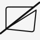

A browser extension that cuts debate evidence cards from any article — auto-parsed citation, formatted body text, and clipboard-ready in seconds.

Card cutting is one of the most time-consuming parts of competitive debate prep. The standard workflow — copy text, open a doc, manually type the citation, format the card — takes minutes per card. Incisive cuts that to seconds.
Press Alt+C on any article. The extension parses the author, title, publication, date, and URL automatically, loads your selected text into the card body, and gives you a formatting toolbar. Hit Cut Card and it's in your clipboard — rich HTML with bold, underline, and highlight intact, ready to paste directly into Verbatim or Google Docs.
chrome.storage.local